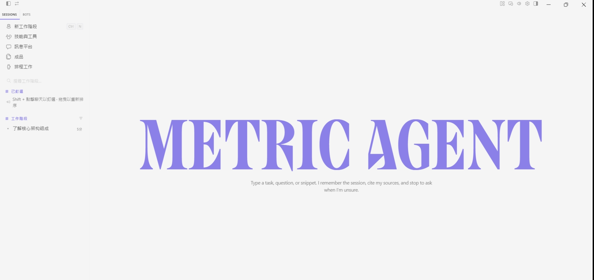
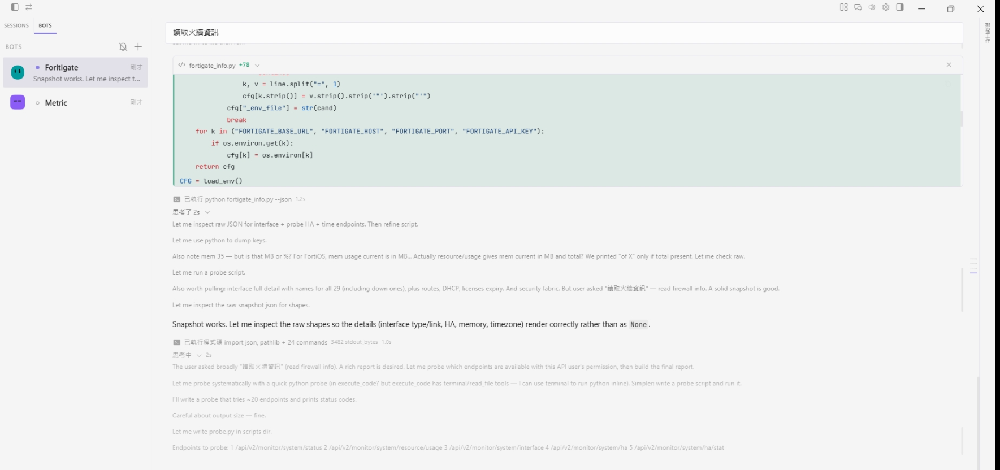
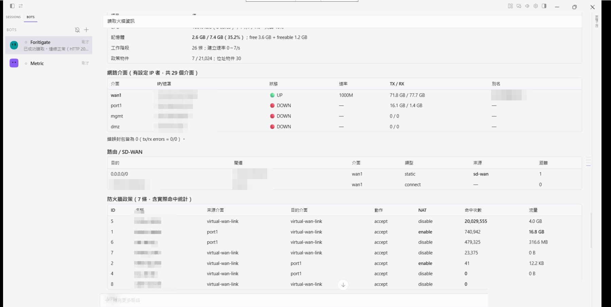

能力
可撰寫並執行程式、呼叫工具處理資料，依執行結果自行修正； 全程可檢視、可中止。

產出
設備盤點、系統狀態查詢、資料彙整等工作， 以整理完成的表格與報告呈現，而非有待自行閱讀、彙整的長篇文字。

伺服器
集中管理使用者、模型與配額，並提供用量統計。部署於企業伺服器，由 IT 維運。
使用者電腦
使用者自企業內部下載頁取得並安裝，無須手動設定。
IT 僅需部署 Portal。Portal 安裝檔已內含 Agent， 安裝完成當日，使用者即可自行下載。
直接讀寫企業既有的筆記與文件，無須匯入、轉檔或另建資料庫。
例行工作依排程自動執行；長時間任務分段執行直至完成，不會中途停擺。
可接入企業的聊天群組；可建立多個機器人，分別設定可執行的功能與存取範圍。
可將企業內部的作業流程寫成技能，由 IT 統一發佈並指定適用對象。
可使用企業自行部署的模型，或串接外部供應商，由企業自行選擇。
提供桌面應用程式、終端機、瀏覽器與聊天機器人四種介面，各介面套用同一套權限。
資料邊界
系統需求
| 最低 | 建議 | |
|---|---|---|
| Portal | 4 vCPU／8 GB／40 GB Windows Server 2019+ |
8 vCPU／16 GB／100 GB SSD |
| Agent | 4 核／16 GB／20 GB Windows 10／11 |
8 核／32 GB／50 GB SSD |
Portal 須以系統管理員權限安裝，安裝後隨開機自動啟動，無須保持使用者登入。 Agent 不需要系統管理員權限。